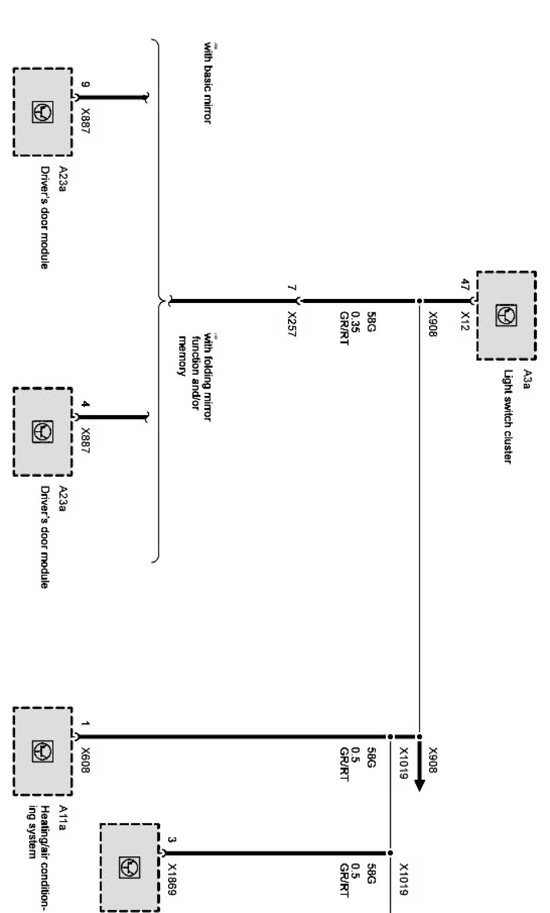
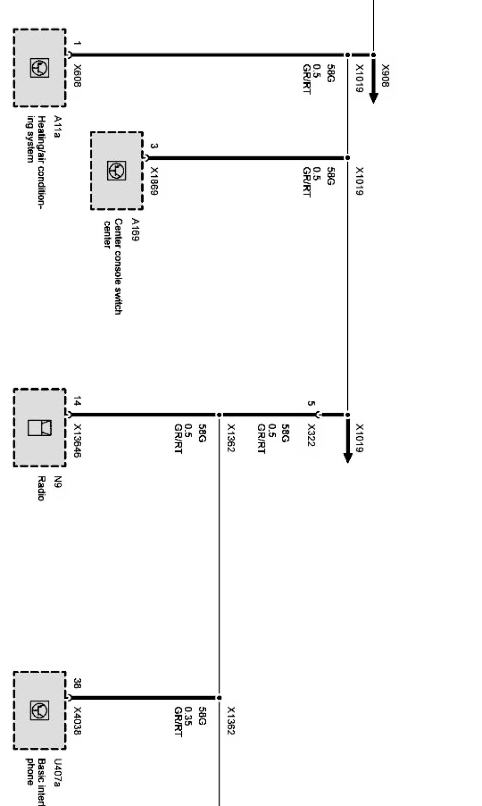
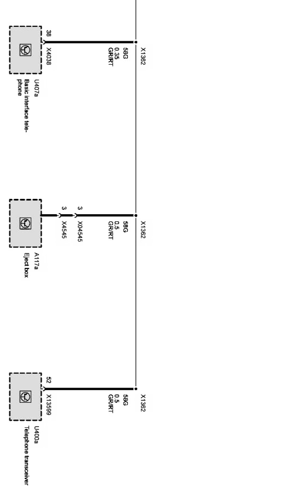

Instrument and Locator Lights For Control Modules (X Series_X3-E83 Up to 09/06)
Instrument and locator lights for control modules Part 1:

Instrument and locator lights for control modules Part 2:

Instrument and locator lights for control modules Part 3:
